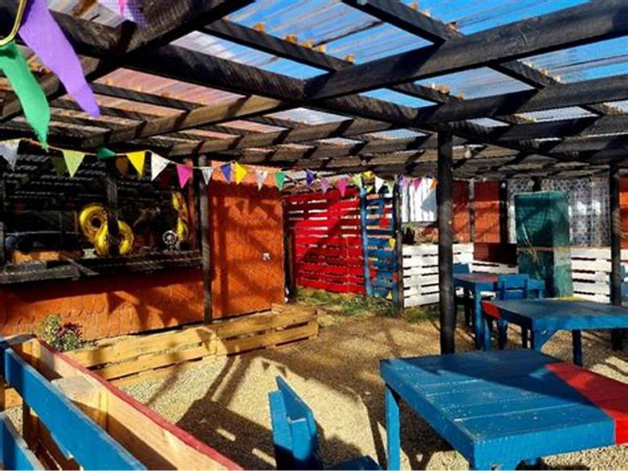
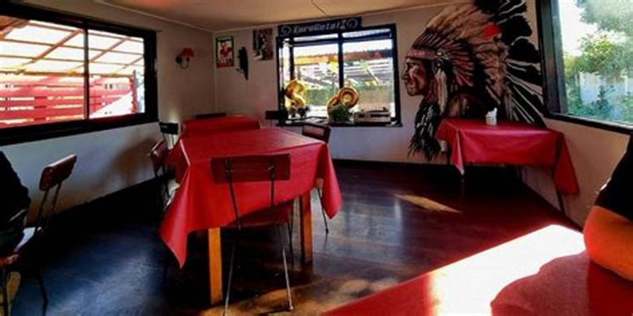
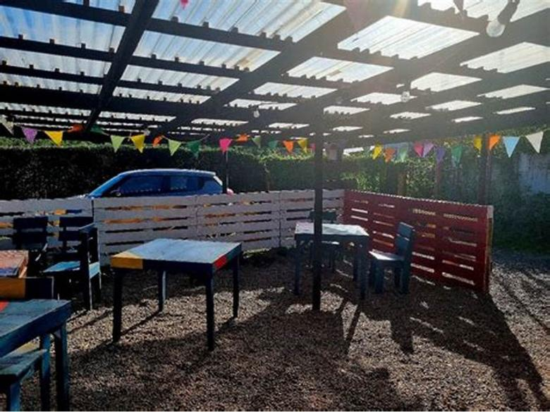
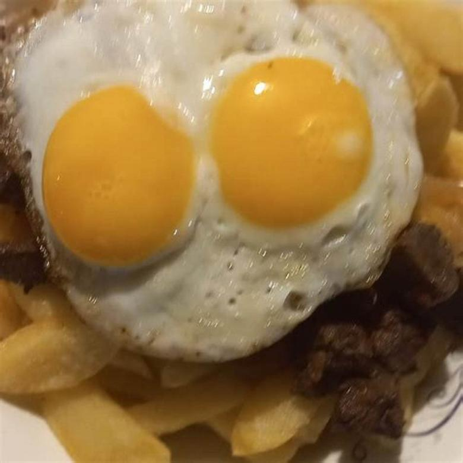
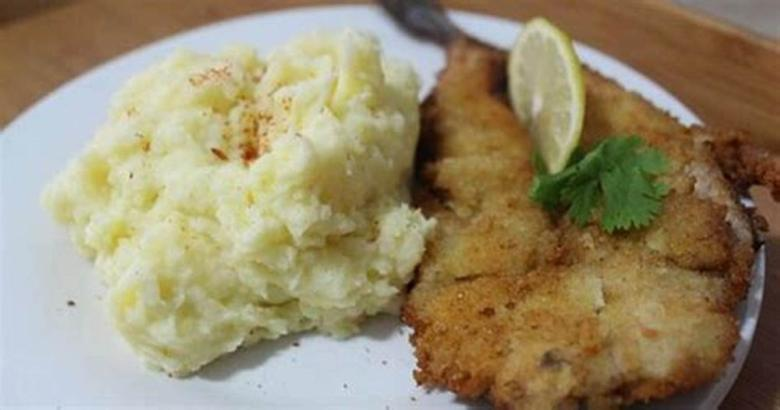
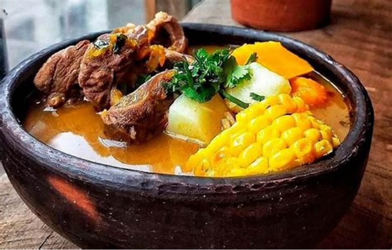

Antes
Con hambre no se aprecia la historia. Comer primero y recorrer después es el orden que más recomienda cualquiera que haya hecho el paseo con niños.
Propuesta de sitio web — preparada para Indio Pije Restaurant por CristalWeb
138 reseñas en el paseo obligado de Niebla, y el turista que googlea parado en el fuerte no los encuentra.
Hoy se está friendo
viernes · 11:30
Restaurante · Niebla, Valdivia · 138 reseñas
Lo que la carta no dice
En casi todas las cartas de la costa dice «pescado frito» y se acabó. Pero no es lo mismo una merluza que un congrio, ni un pescado de la caleta de al lado que uno congelado. El que sabe pregunta. El que no sabe, elige por precio.
Merluza
Carne blanca y suelta, de sabor suave. Es la que casi siempre se sirve cuando la carta dice «pescado frito» y nadie lo aclara.
Congrio
Firme, más graso, aguanta mejor la fritura sin secarse. Cuesta más y se nota en el plato: por eso conviene que esté escrito.
Sierra
Sabor fuerte, carne oscura. Al que le gusta lo busca; al que no lo esperaba, no. Un nombre en la carta evita la decepción.
Róbalo o corvina
Los de mesa fina. Si algún día llegan, decirlo ese día vende más que cualquier promoción.
Los cuatro son los que se ven habitualmente en la costa valdiviana. falta: confirmar cuáles trabajan ustedes — y ese listado, escrito, ya es más de lo que tiene cualquier local del paseo.
Es la pregunta que separa una picada de un local que da lo mismo. Si el pescado viene de una caleta de acá, tiene nombre y se puede decir. Si en temporada baja hay que comprar en otro lado, también se puede decir: la gente perdona todo menos que le mientan.
Esto no es secreto de nadie: es el oficio. Un local que lo publica está diciendo que lo cumple, y el cliente que lo lee llega sabiendo qué mirar.
La masa suena, no acolcha
Una capa fina y crocante que se quiebra. Si la masa es gruesa como coraza, generalmente está tapando algo.
El aceite limpio no deja gusto
El aceite viejo se siente al segundo bocado y se queda después. Es el detalle que más reseñas malas produce y el más barato de cuidar.
Seco por fuera, jugoso por dentro
Si al apoyarlo el papel se empapa de aceite, el aceite estaba frío cuando entró el pescado.
Sale y se come
La fritura no espera. Diez minutos bajo una lámpara y ya no es lo mismo, por buena que haya sido.
Escrito así, es la cocina firmando lo que hace. falta: que la cocina lo revise antes de publicarlo — es su palabra, no la mía.
La foto que decide el verano entero
Enero en Niebla es un pueblo entero buscando dónde sentarse afuera. Este local tiene pérgola, mesas de colores y sombra, y esa foto no está en su ficha de Google: el que pasa manejando por el camino al fuerte no tiene cómo saber que acá se come al aire libre. Es la diferencia entre que entren y que sigan de largo, y se arregla subiendo una foto.
El recorrido de quien visita Niebla
Casi nadie viene a Niebla sólo a comer: viene al fuerte, al mirador, a la feria. La comida entra en el medio, y el que decide dónde parar lo hace con el teléfono en la mano, de pie, en cinco minutos.
Antes
Con hambre no se aprecia la historia. Comer primero y recorrer después es el orden que más recomienda cualquiera que haya hecho el paseo con niños.
Después
Se recorre con energía y se come sin apuro. Conviene si el grupo llegó temprano o si el día está para quedarse sentado mirando el agua.
Lo que esta página no dice: a qué hora abre o cierra el fuerte, ni cuántos minutos hay de caminata. Son datos de terceros que cambian, y publicarlos mal manda a un cliente a una puerta cerrada.
Diga cuándo y cuántos son: el mensaje se arma solo.
A cuatro cuadras del fuerte
Y a menos del mar, que es lo que se viene a ver
Seis fotos de esta página son suyas: la terraza, el salón y los tres platos. Sólo el mar de la portada, el aura y la cita son de banco libre, y están declarados en imagenes/FUENTES.txt.
falta: la fachada desde el camino al fuerte, y la carta con precios
Estas seis ya aparecen más arriba en la página. Vuelven acá en otro tamaño porque una sola pasada de imágenes deja el scroll vacío, y porque de cerca se ven cosas que en grande se pierden. La procedencia de cada una está en imagenes/FUENTES.txt.






El 4,6 con 138 reseñas de su ficha de Google y que no tienen página ni teléfono publicado.
La palabra de la portada. «Merluza» está puesta para mostrar cómo se ve el pescado del día en grande: la escribe la cocina cada mañana, y cambiarla es editar una línea.
El número, la dirección, el horario y de dónde llega el pescado. Ese último es el que más vende y el único que no puede escribir nadie más que ustedes.